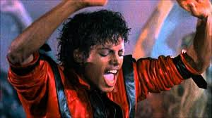

Michael Joseph Jackson,foi um cantor, compositor e dançarino estadunidense. Apelidado de "Rei do Pop", foi um dos ícones culturais mais importantes e influentes de todos os tempos e um dos maiores artistas da história da música. Suas contribuições para a música, a dança e a moda por mais de quatro décadas, juntamente com a divulgação de sua vida pessoal, fizeram dele uma figura global na cultura popular.
(Gary, 29 de agosto de 1958 — Los Angeles, 25 de junho de 2009)

Michael Jackson é um dos artistas musicais mais vendidos de todos os tempos, com vendas estimadas em mais de 500 milhões de discos em todo o mundo; Thriller é o álbum mais vendido de todos os tempos, com vendas estimadas em 70 milhões de cópias em todo o mundo. Seus outros álbuns, incluindo Off the Wall (1979), Bad (1987), Dangerous (1991) e HIStory: Past, Present and Future, Book I (1995), também estão entre os mais vendidos do mundo. Ele ganhou centenas de prêmios (mais do que qualquer outro artista na história da música popular), foi introduzido duas vezes no Hall da Fama do Rock and Roll e é o único artista pop ou rock a ser incluído no Dance Hall of Fame. Suas outras realizações incluem 39 recordes no Guinness World Records (incluindo o de artista de maior sucesso de todos os tempos), 15 Grammy Awards (incluindo os prêmios Legend e Lifetime Achievement), 26 American Music Awards e 13 singles número um da Billboard Hot 100 (mais do que qualquer outro artista masculino na história da Hot 100). Jackson também foi o primeiro artista a ter um single dos dez primeiros na Billboard Hot 100 em cinco décadas diferentes. Em 2016, o patrimônio de Jackson era 825 milhões de dólares, o valor anual mais alto de uma celebridade já registrada pela Forbes.[1]
No final dos anos 1980, Jackson se tornou uma figura de controversa por sua radical mudança de aparência, relacionamentos, comportamento e estilo de vida. Em 1993, ele foi acusado de abusar sexualmente do filho de um amigo da família. O processo foi resolvido fora do tribunal e Jackson não foi indiciado. Em 2005, ele foi julgado e absolvido de outras acusações de abuso sexual infantil e várias outras acusações. Em 2009, enquanto se preparava para a This Is It, Jackson morreu de overdose de sedativos administrados por seu médico pessoal, Conrad Murray. Os fãs de Jackson em todo o mundo expressaram sua tristeza e seu funeral público foi transmitido ao vivo. No entanto, o documentário Leaving Neverland, lançado pela HBO em 2019, detalha as alegações de abuso sexual infantil de dois ex-amigos de Jackson que trabalharam com ele quando crianças.
Em 27 de janeiro de 1984, Michael Jackson sofreu um acidente enquanto gravava o segundo comercial para a televisão do contrato de 5 milhões de dólares que havia assinado para ser garoto-propaganda da Pepsi. O cabelo do astro foi incendiado por fogos de artifício. Ele teve queimaduras de segundo grau no couro cabeludo. Michael foi liberado do hospital um dia depois da internação.
Jackson afirmou sofrer de vitiligo, uma doença autoimune não contagiosa em que ocorre a perda da pigmentação. Posteriormente o cantor ainda contraiu outra doença de pele, ele foi diagnosticado com lúpus no início dos anos 1990.[25] Essa doença também causa alteração na pele, o sistema imune ataca as próprias células e tecidos do corpo, deixando o indivíduo com fortes dores e mais suscetível a outras doenças. Isso explicaria o uso de máscara cirúrgicas em público, e o vício em remédios contra a dor.
"This Is It" seria uma série de 50 concertos que teria início em 13 de julho de 2009, na O2 Arena, em Londres.[37] Os shows seriam suas primeiras aparições significantes desde a bem-sucedida HIStory World Tour de 1996/1997, já que em 2001, ano de lançamento de seu mais recente álbum de inéditas, não foi realizada uma turnê para a promoção deste álbum, apenas 2 concertos foram realizados na cidade de Nova Iorque para a comemoração de seus 30 anos de carreira. Os 750 mil ingressos para esses concertos esgotaram apenas 5 horas após o início das vendas.
Em 25 de junho de 2009, foi noticiado que Michael Jackson sofreu uma parada cardíaca em sua casa, na vizinhança de Holmby Hills, Los Angeles. Os serviços de emergência médica socorreram o cantor em sua casa, na tentativa de reanimá-lo. Porém, como Jackson se encontrava em estado de coma profundo, ele foi levado às pressas para o Ronald Reagan UCLA Medical Center, o hospital universitário da Universidade da Califórnia em Los Angeles (UCLA). Desde sua internação, rumores haviam se espalhado pela imprensa confirmando sua morte.
